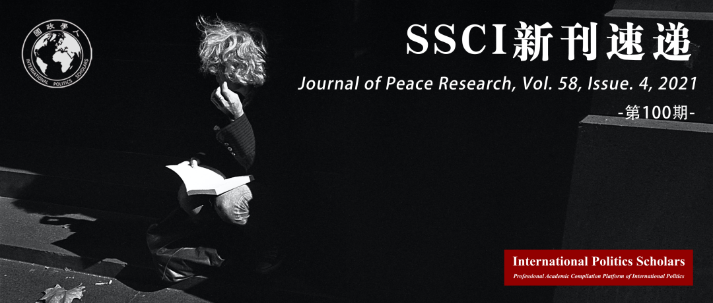

收录于合集 #新刊速递 123个

期刊简介
《和平研究杂志》（ Journal of Peace Research ）是一份关于全球冲突和维护和平的跨学科双月刊，由奥斯陆和平研究所负责。该期刊除了涉及和平相关的概念以外，还会关注暴力的根源以及冲突的解决方法。根据Journal Citation Reports的数据，2021年该期刊的影响因子为4.054。

本期目录
1. 冲突研究中的调查参与效应
Survey participation effects in conflict research
2. 雄心与矛盾：在跨标量和平系统中重新思考积极的和平
Ambition and ambivalence: Reconsidering positive peace as a trans-scalar peace system
3. 联合国安理会的人道主义转向：通过机器学习算法解释国际规范的发展
The Humanitarian Turn at the UNSC: Explaining the development of international norms through machine learning algorithms
4. 如派遣部队般迅速：联合国维和响应的动力、能力与限制
Only as fast as its troop contributors: Incentives, capabilities, and constraints in the UN’s peacekeeping response
5. 通过第三方外交阻止致命暴力：调解对冲突强度的影响
Impeding fatal violence through third-party diplomacy: The effect of mediation on conflict intensity
6.越强的国家越人道？对“模范恶棍”的重新评估
Are stronger states more humane? A re-evaluation of ‘exemplary villains’
7.静待良机或及时撤退：非对称依赖，议题显著性与冲突持续时间
Biding time versus timely retreat: Asymmetric dependence, issue salience, and conflict duration
8.权力分享、冲突解决与先发制人背叛的逻辑
Power-sharing, conflict resolution, and the logic of pre-emptive defection
9.强权政治：入侵巴格达后的武装非国家行为体和公共电力的夺取
Power politics: Armed non-state actors and the capture of public electricity in post-invasion Baghdad
10.传染效应的微观分析：来自库尔德冲突的证据
A micro-level analysis of the contagion effect: Evidence from the Kurdish conflict
11.内战后的指挥官与社会联系
Commander–community ties after civil war
12.用于教育的武器？外部支持和叛军提供的社会服务
Arms for education? External support and rebel social services
01
冲突研究中的调查参与效应
题目： Survey participation effects in conflict research
作者： Alexander De Juan，德国奥斯纳布吕肯大学教授；Carlo Koos，米克尔森学院高级研究员。
摘要： 如果冲突地区的调查参与者曾接受过采访，那他们的反应是否会有所不同？学术界和政策界对战后政治舆论的兴趣大大增加。这种调查研究的激增带来的一个意想不到的后果是，个人被多次采访的可能性越来越大。然而，如果参与一次调查导致受访者改变了他们的态度或行为，那么他们随后的调查反应与其他样本人口相比可能会存在偏差。利用在刚果民主共和国（DRC）东部地区收集的原始调查数据，本文旨在研究冲突背景下的这种 “调查参与效应”。在本文的代表性样本中，18%的受访者表示他们曾经接受过采访。多变量分析表明，他们对社会关系、政治机构、性别规范和战时受害的陈述态度与第一次受访者的回答有很大区别。此外，本文的分析表明，有经验的受访者有特定的回答方式，特别是有支持极端回答选项的倾向。虽然多变量分析中的实质性偏差似乎相当罕见，但研究结果表明，研究人员应注意在家庭和民意调查经常针对的地区所进行的数据收集工作。
Do survey participants in conflict zones respond differently if they have been interviewed before? Academic and policy interest in postwar political opinion has increased tremendously. One unexpected consequence of this surge of survey research is a growing probability that individuals will be interviewed multiple times. However, if participating in one survey causes respondents to change their attitudes or behavior, their subsequent survey responses may be biased in comparison to the rest of the sample population. Our article aims to investigate such ‘survey participation effects’ in conflict contexts. We draw on original survey data collected in the eastern Democratic Republic of Congo (DRC). In our representative sample, 18% of respondents report that they have been interviewed before. Multivariate analyses demonstrate that their stated attitudes on social relations, political institutions, gender norms, and wartime victimization differ substantively from the responses of first-time interviewees. Moreover, our analyses indicate that experienced respondents have specific response styles – in particular, a tendency to support extreme response options. While substantive bias in multivariate analyses seems to be rather rare, our findings indicate that researchers should be aware of the footprints of data collection efforts in areas frequently targeted by household and opinion surveys.
02
雄心与矛盾：在跨标量和平系统中重新思考积极的和平
题目： Ambition and ambivalence: Reconsidering positive peace as a trans- scalar peace system
作者： Gearoid Millar，阿伯丁大学冲突、过渡与和平研究所社会科学博士。
摘要： 半个世纪以来，积极的和平一直是诸多和平研究者与和平实践者梦寐以求的目标。然而，最近大量的学术研究表明，该领域著名的理论、政策和实践都无法支持积极和平，并对于实现积极和平这一雄心展现出相当大的矛盾。本文提出造成这一缺陷的关键原因是，积极和平的理论对于当前全球化科技、法律和经济等领域所导致的矛盾的变化的内涵未作出充分的反应。这样的联合缩小了行为体之间的差距，也将少数行为体中的权力分散，指数倍地扩大了渗透进新社会的机构、规范、行动和议题的影响力，具体化了国家内部、国与国之间以及全球范围内普遍存在的不平等和边缘化。积极的和平未能对这些这些变化做出有力反应也引发了人们对其是否有能力应对未来更加广泛的挑战的担忧，这些挑战涉及技术创新、气候变化、人口结构转变、劳动力自动化、新的治理模式的探寻等。因此本文重申和平与冲突研究的理想目标，在Lederach早先提出的建设和平三角的基础上提出跨标量和平体系。这一体系强调在全球、区域、国与国之间、国家和地方各级采取协调一致的补充性政策和行动的必要性，并利用逆向映射的方法促进各级对行为体、机构和决议的平等尊重，同时，给予具备与任何政策相关知识、经验和能力的人特权。这种方法在吸取本土转变的经验下，发展一个全球跨标量和平体系。
For 50 years positive peace has served as an aspirational goal for many scholars and practitioners of peace. However, much recent scholarly literature evidences a substantial ambivalence toward this ambition, suggesting that prominent theories, policies and practices in the field have failed to support positive peace. This article argues that a key reason for this shortcoming is the field’s failure to respond adequately to the evolving character of conflict (latent and overt) related to technological, legal and economic changes associated with the consolidation of globalization over this period. This consolidation has served to shrink the distances between previously remote actors, to expand exponentially the influence of many institutions, norms, practices and projects as they penetrate new societies, to concentrate power into the hands of ever fewer actors, and to reify instead of deconstruct endemic inequality and marginalization within states, between states, and across the globe. The failure of the field to respond robustly to these changes also prompts concerns about its ability to face sweeping challenges soon to come related to technological innovation, climate change, demographic shifts, labour automation and the search for new governance models. This article, therefore, reaffirms the aspirational goals of peace and conflict studies by building on Lederach’s earlier Peacebuilding Triangle to propose a Trans-Scalar Peace System which would recognize the need for coherent and supplementary policies and actions across scales (global, regional, international, nation and local) and utilize a backward-mapping approach to promote a parity of esteem for actors, institutions and decisions at each scale which would, at the same time, privilege the voice of those with the most pertinent knowledge, experience and capacity for action in support of any given policy or practice. Such an approach would honour the lessons of the ‘local turn’ while developing a global trans-scalar peace system.
03
联合国安理会的人道主义转向：通过机器学习算法解释国际规范的发展
题目： The Humanitarian Turn at the UNSC: Explaining the development of international norms through machine learning algorithms
作者： Richard Hanania，哥伦比亚大学萨兹曼战争与和平研究中心研究员，专攻国际关系，政治心理学以及大战略。
摘要： 联合国安理会 (UNSC)已经从一个几乎完全专注于冲突的机构转变为一个处理广泛问题的机构。尽管近年来有一系列强有力的文章展示了国际规范是如何随着时间的推移而发展的，但我们仍然不清楚国际机构为何以及何时改变其使命。本文认为，虽然国际政治通常具有惰性，但对系统的冲击或焦点事件可以迫使理性行为体采用新的适当逻辑。1945年以来，冷战的结束和赫尔辛基协议的签署就是此类事件的突出表现。通过潜在的狄利克雷分配 (一种用于对文本进行分类的机器学习算法)，1946年至2017年间的安理会决议可以分为战争、惩罚和人道主义主题。冷战后，人道主义话题的频率激增，以及更精细的模型都表明：在赫尔辛基之后，人权和选举的相关的词汇增加频率相似。这些变化是迅速的，几乎是在焦点事件发生后立即发生，展现出它们对于规范传播的重要性。该分析还展示了2000年代中期向人道主义的另一次转变，展示了主题建模的能力，即可以发现早期分析遗漏的变化。
The UN Security Council (UNSC) has transformed from a body almost exclusively focused on conflict to one that addresses a wide variety of issues. Despite a series of powerful works in recent years showing how international norms have developed over time, we still lack clear understanding of why and when international institutions change their missions. This article argues that while international politics is usually characterized by inertia, shocks to the system, or focal point events, can compel rational actors to adopt new logics of appropriateness. Since 1945, the end of the Cold War and the signing of the Helsinki Accords stand out as such events. Through latent Dirichlet allocation, a machine learning algorithm used to classify text, UNSC resolutions between 1946 and 2017 can be divided into the subjects of War, Punitive, and Humanitarian. The topic Humanitarian exploded in frequency after the Cold War, and more refined models show that words related to human rights and elections similarly increased after Helsinki. These changes are rapid and occur in almost the immediate aftermath of focal point events, showing their importance for norm diffusion. The analysis also reveals another shift towards humanitarian topics in the mid-2000s, demonstrating the ability of topic modeling to uncover changes that have been missed by earlier kinds of analysis.
04
如派遣部队般迅速：联合国维和响应的动力、能力与限制
题目： Only as fast as its troop contributors: Incentives, capabilities, and constraints in the UN’s peacekeeping response
作者： Magnus Lundgren（斯德哥尔摩大学政治科学系）；Kseniya Oksamytna（伦敦大学国王学院战争研究部）；Katharina P Coleman（英属哥伦比亚大学政治科学系）。
摘要： 国际组织迅速应对危机的能力对其效力和合法性而言至关重要。对于向世界上一些最困难的冲突地区派遣维和任务的联合国来说，及时响应可以拯救生命与维护和平。然而，联合国却经常出现无法迅速部署维和人员的情况。由于缺乏常备军，联合国依靠成员国提供维和部队。在对联合国维和行动部署速度决定因素的首次系统研究中，作者认为从理论上看部署速度取决于部队派遣国的动力、能力和限制。作者运用持续模型分析了1991年至2015年28项维和行动部署速度的新数据，获得了三个主要发现：在其他条件相同的情况下，依赖联合国维和补偿的国家、面临特定冲突的负面外部性的国家，或在海外派遣部队方面没有议会限制的国家部署维和部队速度会更快。通过加强对成员国特征影响集体后果的理解，这些发现对研究联合国维和效率、派遣部队的机动性以及快速部署维和部队的动力具有重要意义。
International organizations’ ability to respond promptly to crises is essential for their effectiveness and legitimacy. For the UN, which sends peacekeeping missions to some of the world’s most difficult conflicts, responsiveness can save lives and protect peace. Very often, however, the UN fails to deploy peacekeepers rapidly. Lacking a standing army, the UN relies on its member states to provide troops for peacekeeping operations. In the first systematic study of the determinants of deployment speed in UN peacekeeping, we theorize that this speed hinges on the incentives, capabilities, and constraints of the troop-contributing countries. Using duration modeling, we analyze novel data on the deployment speed in 28 peacekeeping operations between 1991 and 2015. Our data reveal three principal findings: All else equal, countries that depend on peacekeeping reimbursements by the UN, are exposed to negative externalities from a particular conflict, or lack parliamentary constraints on sending troops abroad deploy more swiftly than others. By underlining how member state characteristics affect aggregate outcomes, these findings have important implications for research on the effectiveness of UN peacekeeping, troop contribution dynamics, and rapid deployment initiatives.
05
通过第三方外交阻止致命暴力：调解对冲突强度的影响
题目： Impeding fatal violence through third-party diplomacy: The effect of mediation on conflict intensity
作者： Constantin Ruhe，法兰克福歌德大学政治学助理教授。
摘要： 现有研究并未提供关于调解是否以及如何阻止与战斗相关死亡的系统见解。因此，本文就调解对每月致命性暴力的影响进行了时间上的分类分析，并对调解的效果进行了评估。文章预测，对手会从战斗行为和谈判行为两个方面评价反对者的可信度，在谈判期间减少战斗强度是合作的标志，调解人可以通过谈判建立信任。在调解过程中，谈判内容提供了有关冲突方对解决冲突真正感兴趣的信息。只有调解实现了核心不相容的谈判，冲突各方才会愿意降低战斗强度。在这种情况下，调解过程中披露的信息可以建立信任，在实质上减少暴力。对1993年至2007年间所有非洲冲突的实证分析支持这一预测，并表明如果调解讨论冲突的主要不相容之处，平均而言调解之后致命性暴力会得到实质性和持久的减少。相比之下，对其他话题的调解与暴力的小幅和短暂的减少有关。叙利亚在谈判过程中的战斗伤亡数据以及定性证据进一步支持了理论机制和模型预测。研究表明如果调解能够实现冲突方在主要冲突问题上进行交流，就可以实质性地降低冲突强度。
Existing research provides no systematic insights into if and how mediation impedes battle-related deaths. Therefore, this article presents a temporally disaggregated analysis and assesses the effect of mediation on monthly fatal violence. The article predicts that adversaries evaluate opponents’ trustworthiness from both fighting and negotiation behavior. It argues that reducing fighting intensity during negotiations is a sign of cooperation, which can be negotiated by mediators to build trust. Over the course of mediation, the content of negotiations provides information about how genuinely a conflict party is interested in conflict resolution. Only if mediation achieves negotiation of core incompatibilities will conflict parties be willing to reduce fighting intensity. Under these conditions, information revealed in a mediation process can build trust and substantively reduce violence. An empirical analysis of all African conflicts between 1993 and 2007 supports this prediction and shows that on average mediation is followed by substantive and lasting reductions in fatal violence, if mediation discusses the conflict’s main incompatibility. In contrast, mediation on other topics is associated with a small, fleeting reduction in violence. Data of battle- related fatalities in Syria during negotiations as well as qualitative evidence further support the theoretical mechanism and the model prediction. The study concludes that mediation can reduce conflict intensity substantively, if it achieves exchange between conflict parties on the main conflict issues.
06
越强的国家越人道？对“模范恶棍”的重新评估
题目： Are stronger states more humane? A re-evaluation of ‘exemplary villains’
作者： Seung Hoon Chae，牛津大学博士生，韩国军事学院讲师，主要研究领域是恐怖主义、人权和流行病政治。
摘要： 通常来说，人权学者认为越强的国家越人道。恩格尔哈特（Englehart）在近期的书籍和文章中指出：“狭隘暴君”而非“模范恶棍”才是侵犯人权的罪魁祸首。但是，某些模范恶棍是极为典型的；更大的权力只会加剧对人权的侵犯。事实上，独裁政权强大时试图更好地维护权利的观点，与发生在强大的专制国家中某些著名的大屠杀案例相矛盾。本文试图解决这一困惑，文章认为，国家能力确实重要，但对于独裁政府和民主政府而言，其重要性存在差异。从政府的角度来看，在这两个政权中都存在的某些类型的侵犯人权行为是无意中发生的。狭隘暴君犯下这些未经授权的侵害人权的行为，是试图从国家的委托代理问题中获益。但是，与民主政体不同的是，专制政府可以授权某种特定形式的侵犯人权行为，以达到自己的目标。尽管国家能力可以减少对“未授权”形式的人权侵犯，但它不一定可以减少诸如上述国家“授权”后对人权的侵犯。因此，对于独裁统治而言，国家能力的净效应，没有民主国家那样显著。为了证明这一论点，本文使用时间序列横截面数据集（包括1981至2002年，不少于142个国家的数据集），进行 18 个有序逻辑回归。本文的经验分析提供了强有力的支撑，得以将人权、国家能力和政权类型之间的关系理论化。正如预测的那样，民主国家的国家能力有助于改善人权，专制国家则不一定。
In general, the human rights scholarship finds stronger states to be more humane. In particular, Englehart’s recent book and article assert that ‘petty despots’, rather than ‘exemplary villains’, are the real culprits behind the abuse of human rights. However, some exemplary villains are truly exemplary; providing them with greater powers will only intensify human rights abuses. Indeed, the idea that even dictatorships would better protect rights when stronger contradicts some of the most well-known cases of mass-murder that occurred in powerful authoritarian states. In an attempt to resolve this puzzle, this article argues that, while state capacity does matter, it matters differently for dictatorships and democracies. In both regimes, there are certain types of human rights violations that, from the government’s perspective, happen unwittingly. These unauthorized human rights violations are perpetrated by petty despots trying to benefit from the state’s principal–agent problems. Yet, unlike a democracy, a dictatorship can authorize the violation of certain types of human rights to accomplish its objectives. Whereas state capacity can reduce ‘unauthorized’ types of abuses, it would not necessarily diminish such abuses that are ‘authorized’ by the state. The net effects of state capacity, therefore, will not be as positive for autocracies as they are for democracies. To validate this argument, this article conducts 18 ordered logistic regressions with a time-series cross- sectional dataset that encompasses no less than 142 countries from the period of 1981 to 2002. The empirical analysis provides solid support for the theorized relationship among human rights, state capacity and regime type. As predicted, state capacity improves human rights in democracies but not necessarily in autocracies.
07
静待良机或及时撤退：非对称依赖，议题显著性与冲突持续时间
题目： Biding time versus timely retreat: Asymmetric dependence, issue salience, and conflict duration
作者： Yuleng Zeng，奥地利萨尔茨堡大学政治科学系博士后研究员。
摘要： 贸易冲突研究聚焦于经济上的相互依赖是否且如何抑制国家间引发的冲突。同时，战争的形式理论研究显示：冲突的开端和结束之间存在固有联系。在本文中，作者运用一种消耗战模型来确定经济依赖和冲突持续时间之间的关系，从而将上述两行文献相关联。作者认为，战略计算从根本上是等候时机与适时撤退之间的权衡。在经济消耗战的环境中，国家会将新一轮经济损失所带来的相对成本与赢得争议所带来的潜在利益相比较。正因为如此，经济依赖可以同时拥有胁迫与提供信息的效应，而这些效应则取决于议题显著性。当显著性低时，胁迫效应占据主导地位，国家将更有可能退出争端，因为它们承担的经济成本将成比例增大。当显著性足够高时，信息效应将发挥作用，国家退出带来高经济成本的争端的可能性降低。作者在国际危机行为和国际军事冲突两组数据库上测试这些结果，并发现，信息效应获得了强有力的支持，胁迫效应则有暗示性的证据。
Trade-conflict studies focus on whether and how economic interdependence suppresses interstate conflict initiation. Meanwhile, formal theories of war show that conflict initiation is inherently tied to its termination. In this article, I seek to bridge the two literature by utilizing a war of attrition model to formalize the relationship between economic dependence and conflict duration. I theorize that the strategic calculation ultimately comes down to a trade-off between biding one’s time and retreating in a timely manner. In the context of economic attrition, states weigh the relative costs of suffering an additional round of economic disruption against the potential benefits of winning the disputed good. As such, economic dependence can have both coercive and informational effects and these effects are contingent upon issue salience. When the issue salience is low, the coercive effect dominates; states are more likely to quit conflicts as they suffer proportionally larger economic costs. When the issue salience is high enough, the informational effect can kick in; states are less likely to quit conflicts with increasing economic costs. I test these implications on the International Crisis Behavior (ICB) and the Militarized Interstate Dispute (MID) data, finding strong support for the informational effect and suggestive evidence for the coercive one.
08
权力分享、冲突解决与先发制人背叛的逻辑
题目： Power-sharing, conflict resolution, and the logic of pre-emptive defection
作者： Chelsea Johnson，伦敦政治经济学院研究员。
摘要： 关于通过权力分享实现和平的可能性，既有结论有着不同观点。一些学者认为，权力分享对克服冲突过渡期的承诺问题没有什么作用，而另一些学者则认为，这种让步提供了各方愿意承担成本的信号。本文发展并检验了一个新的理论，该理论旨在阐明权力分享交易有助于克服承诺问题的机制。本文认为，执政党往往拥有选举和军事优势，这增加了叛军领导人在放弃使用暴力的能力之前背叛协议的动机。如果协议提供了抵消选举失败和部队被收编的风险的具体保障，这些先发制人的背叛动机就会得到减轻。本文对临时权力分享的子类型进行了新的分类，区分了长期和短期安排。该分析基于一个原始的跨国数据集，即1975年至2015年期间政府与反政府武装签署的谈判协议（N
168）。逻辑回归结果清楚地表明，在其他条件相同的情况下，规定了“联合”式改革的权力分享协议明显更有可能解决协议双方的冲突。同时，权力分享的标准概念化，包括过渡性联盟和部队整合，似乎不太可能确保叛军在过渡期后的承诺，这有助于解释现有研究中的矛盾结果。
Conclusions about the potential for peace via power-sharing are mixed. For some, power-sharing does little to overcome the commitment problem characterizing a transition from conflict, while others argue that such concessions provide signals of parties’ willingness to incur costs. This article develops and tests a new theory, aiming to shed light on the mechanisms through which power-sharing bargains help to overcome the commitment problem. I argue that government parties tend to hold an electoral and military advantage, which heightens incentives for rebel leaders to defect from a settlement prior to conceding their capacity to use violence. Where settlements provide discrete guarantees that offset the risks of electoral defeat and the co-optation of forces, these incentives for pre-emptive defection should be mitigated. I offer a novel disaggregation of provisional power-sharing subtypes, distinguishing between long-term and short-term arrangements. The analysis rests on an original, cross-national dataset of government-and-rebel dyads to negotiated settlements signed between 1975 and 2015 (N = 168). The logistic regression results clearly indicate that power- sharing settlements stipulating ‘consociational’-style reforms are significantly more likely to resolve conflict between settlement dyads, all else equal. Meanwhile, standard conceptualizations of power-sharing, which include transitional coalitions and troop integration, appear unlikely to secure rebel commitment beyond the transition period, which helps to explain the contradictory findings in existing research.
09
强权政治：入侵巴格达后的武装非国家行为体和公共电力的夺取
题目： Power politics: Armed non-state actors and the capture of public electricity in post-invasion Baghdad
作者： Christiana Parreira，普林斯顿大学近东研究系博士后研究助理，主要研究领域是地方政治机构和精英对现代中东更广泛的国家建设模式的塑造。
摘要： 学者们观察到，武装的非国家行为体经常提供社会服务，以加强民众的支持和其作为地方秩序保障者的合法性。另一方面，由于资金限制，使得非国家行为体难以独立提供分销产品。本文认为，武装的非国家行为体可以采取一种替代的、性价比更高的策略来提供服务。武装组织可以利用其武装力量控制和垄断国家支持的服务业。文章将在复兴党政权被推翻后不久成立的萨德尔运动武装组织，在入侵巴格达后占领公共电力基础设施的事件作为范例。通过对萨德尔办公室所在地的地方信息和遥感数据的分析，本文判断在2003至2006年间，巴格达的萨德尔附属社区获取电力的平均增幅明显高于该市其他地区。文章推翻了原有的结论，认为电力差异不能够不能用人口统计学差异或由于持续冲突而造成的变化来解释。文章还讨论了如2003年后伊拉克这样的脆弱环境中，非国家行为体的战略将如何促进低合法性和弱能力的平衡。
Scholars observe that armed non-state actors (NSAs) often provide social services to reinforce their popular support and legitimacy as guarantors of local order. On the other hand, NSAs usually face funding constraints that make the independent provision of distributive goods difficult. This article argues that armed NSAs employ an alternative, more cost-effective tactic to deliver services. It argues that militant groups can leverage their armed capacity to capture control of and monopolize access to state-sponsored services. As an example, it documents the capture of public electricity infrastructure that took place in post-invasion Baghdad under the Sadrist Movement, an armed group formed shortly after the ouster of the Ba’athist state. Using local-level information about the location of Sadrist offices and remote sensing data, it estimates that Sadrist-affiliated neighborhoods in Baghdad saw an average increase in access to electricity between 2003 and 2006 that was significantly greater than in other areas of the city. The article concludes by addressing threats to inference, showing that these differences are not alternatively explained by demographic differences or changes therein due to ongoing conflict. It also discusses how this NSA strategy might contribute to an equilibrium of low state legitimacy and weak capacity in fragile contexts like that of post-2003 Iraq.
10
传染效应的微观分析：来自库尔德冲突的证据
题目： A micro-level analysis of the contagion effect: Evidence from the Kurdish conflict
作者： Zeki Sarigil，毕尔肯大学政治学助理教授，专攻土耳其政治中的种族边界，世俗库尔德运动与伊斯兰。
摘要： 几乎所有关于冲突蔓延扩散的大数据研究的分析单位都是集体行为者，例如国家，族群或运动。因此，个人层面的传染动态和过程被忽略了。本研究使用来自民意调查的原始数据，研究了土耳其库尔德冲突背景下传染效应的微观动态。该研究表明，跨国族群联系，尤其是跨境家庭纽带和互动，通过若干战略和理念机制可以促进冲突蔓延。首先，跨界的家族联系和互动放大了相邻冲突国家族裔亲属成就的示范效应。其次，跨境家族纽带促进了跨境同族之间的合作。最后，这种与冲突地区族裔亲属的联系增强了泛族裔认同。实证结果表明，居住在土耳其的库尔德人如果在附近有冲突的国家 (即叙利亚，伊拉克和伊朗) 有近亲，他们就有更强烈的民族主义倾向以及反对中心的主张。然而，在其他地方 (欧洲) 有近亲并不会产生同样的影响。库尔德人的案例证明，传染过程和动态可能因特定种族群体的成员而异。因此，有必要在冲突蔓延研究中扩大对集体行为者的传统关注，并更多地关注微观层面的变量和因素。
The unit of analysis in almost all large-N studies on conflict contagion and diffusion is collective actors, such as states and ethnic groups or movements. Thus, contagion dynamics and processes at the individual level have been neglected. Using original data derived from a public opinion survey, this study examines the micro-level dynamics of contagion in the context of Turkey’s Kurdish conflict. The study suggests that transnational ethnic ties, and in particular, cross-border familial bonds and interactions, facilitate conflict contagion through several strategic and ideational mechanisms. First, transborder familial ties and interactions amplify the demonstration effect of ethnic-kin achievements in contiguous conflict countries. Second, cross-border familial bonds facilitate collaboration between cross-border co-ethnics. Finally, such ties to conflict zones with ethnic kin groups empower pan-ethnic identities. The empirical findings show that Kurds living in Turkey who have close relatives in nearby countries hosting conflicting ethnic-kin groups (i.e. Syria, Iraq, and Iran) have stronger ethnonationalist orientations and claims against the center. However, having close relatives elsewhere (e.g. Europe) does not generate the same impact. The Kurdish case evidences that contagion processes and dynamics might vary substantially across the members of a particular ethnic group. Hence, it is necessary to broaden the conventional focus on collective actors in conflict contagion research and pay greater attention to micro-level variables and factors.
11
内战后的指挥官与社会联系
题目： Commander–community ties after civil war
作者： Philip A Martin（乔治梅森大学政策和政府学院）
摘要： 前叛军军事指挥官在内战后的和平建设中发挥着核心作用。然而，这些行动者的影响力和动员能力并不统一：战争结束后，部分地区的指挥官与平民的联系依然紧密，而其他地区的这种联系则逐渐消失。通过分析科特迪瓦前叛军占领地区的新数据集，本文研究了指挥官与社会联系为什么在冲突后的过渡时期坚挺或下降。这些发现支持了一种政治问责理论：在战争期间叛乱分子为平民提供必需品的地区，指挥官保留了政治资本与支持者的网络联系。相比之下，如果叛乱分子的战时统治涉及虐待和胁迫，指挥官就不太可能维持牢固的关系。这些发现挑战了传统观点，即暴力军阀主义可以解释叛军指挥官在和平时期继续保持权力。更确切地说，有效的战时治理可能会在地区内诞生具有威望的强人，而这些强人反过来又会破坏战后的国家建设。
Ex-rebel military commanders play a central role in peacebuilding after civil war. Yet the influence and mobilization power of these actors is not uniform: in some areas commanders retain strong ties to civilian populations after war’s end, while in other areas such ties wither away. This article analyses a novel dataset of former rebel-occupied localities in Coˆte d’Ivoire to investigate why commander–community linkages endure or decline after post- conflict transitions. The findings support a theory of political accountability: commanders retained political capital and access to networks of supporters in areas where insurgents provided essential goods to civilians during war. By contrast, where insurgents’ wartime rule involved abuse and coercion, commanders were less likely to sustain strong ties. These findings challenge the conventional wisdom that violent warlordism explains the persistence of rebel commanders’ power in peacetime. Rather, effective wartime governance may create regionally embedded strongmen who can in turn disrupt postwar state-building.
12
用于教育的武器？外部支持和叛军提供的社会服务
题目： Arms for education? External support and rebel social services
作者： Reyko Huang，德州农工大学布什政府和公共服务学院副教授。Patricia L Sullivan，北卡罗来纳大学教堂山分校公共政策与和平、战争与国防副教授。
摘要： 外国对反叛组织的支持如何影响武装冲突期间叛军对平民的治理？现有的研究主要考察叛军统治的地方及国内的政治，而对外国干预叛军治理的影响则没有深入探讨。本研究着眼于叛军提供的社会服务，考虑了两个相互争鸣的观点。第一种观点认为，外国赞助减少了叛军对当地平民资源的依赖，从而减少了叛军提供服务的动机。第二种观点认为通过增加叛军的资源和军事能力，外国支持提高了他们提供福利服务的能力。这些相互争鸣的逻辑表明，不同类型的外国支持对叛军社会服务的提供有不同的影响。本文使用1945年后对叛军组织和叛军治理的外部支持的横截面时间序列数据来检验这一理论，提出接受外部资金、武器或培训的反叛团体更有可能向平民提供教育和医疗服务。相比之下，直接军事干预以协助叛乱力量对叛军的社会服务供应没有影响。本文是第一批系统研究外部支持和第三方干预对内战期间叛军提供的社会服务的影响的文章之一，并对争端地区内的平民福利问题带来众多启示。
How does foreign support for rebel groups affect rebel governance of civilians during armed conflict? Existing studies primarily examine the local and domestic politics of rebel rule, leaving the effects of foreign intervention on rebel governance underexplored. Focusing on rebel provision of social services, this study considers two competing arguments. The first suggests that foreign sponsorship reduces rebels’ need to rely on local civilians for resources and hence decreases rebels’ incentives to provide services. The second anticipates that by augmenting rebels’ resources and military capabilities, foreign support increases their capacity to provide welfare services. These competing logics suggest that different types of foreign support have divergent effects on rebel social service provision. The article tests this theory using cross-sectional time-series data on external support for rebel groups and rebel governance for the post-1945 period. It finds that rebel groups that receive external funding, weapons or training are significantly more likely to provide education and health services to civilians. In contrast, direct military intervention to assist insurgent forces has no effect on rebel service provision. This article is among the first to systematically study the impact of external support and third-party intervention on rebel social service provision during civil war and holds implications for civilian welfare in contested territories.
编译 | 李源 赵怡雯 江若婵 杨稚珉 聂涵琳 廖泽玉 肖龙
审校 | 李源 赵怡雯 江若婵 杨稚珉 聂涵琳 廖泽玉 肖龙
排版 | 王慧瑜 黄伊蕾

国政学人
支持学术公益与知识传播
微信扫一扫赞赏作者 __赞赏
已喜欢，对作者说句悄悄话
取消 __
发送给作者
发送
最多40字，当前共字
上一页 1/3 下一页
长按二维码向我转账
支持学术公益与知识传播
受苹果公司新规定影响，微信 iOS 版的赞赏功能被关闭，可通过二维码转账支持公众号。